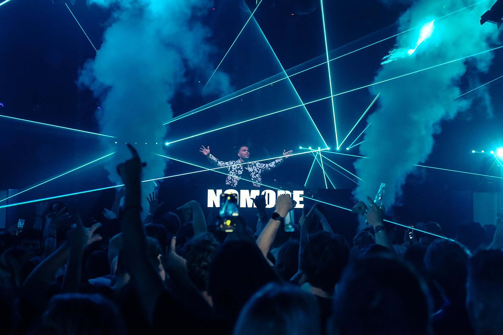

NomoreMusic
Résident des Bateaux Lyonnais (Maisons Bocuse), Nomore signe des DJ sets sur mesure. Une house music feutrée qui donne une atmosphère élégante à vos événements, privés ou professionnels.
Booker un DJ set

Résident des Bateaux Lyonnais (Maisons Bocuse), Nomore signe des DJ sets sur mesure. Une house music feutrée qui donne une atmosphère élégante à vos événements, privés ou professionnels.
Booker un DJ set
Nous organisons vos événements dans des lieux d’exception : hôtels, rooftops, villas privées, bateaux, châteaux, tables gastronomiques. Un lieu, une heure, une atmosphère.
Produire mon événementExtraits exclusifs
Prochaines dates
Questions fréquentes
Nomore est DJ et producteur d’événements à Lyon, résident des Bateaux Lyonnais (Maisons Bocuse). Fort de 12 ans d’expérience en clubs, hôtels, rooftops et soirées business, il signe une house music lounge et organique : un style accessible qui parle à tous les publics.
Lyon est son port d’attache, mais Nomore se produit partout en France, le plus souvent entre Lyon, Paris et Saint-Tropez. Son parcours l’a également mené à l’international, notamment à Londres et à Madrid.
Oui. Il intervient avec une régie Pioneer complète et des enceintes professionnelles. L’installation est rapide et réalisée par nos soins. Ses sets durent de 1 à 5 heures, selon le format de votre événement.
Oui. Avec la prestation Nomore Hour, votre événement est conçu et produit dans son ensemble : direction artistique, musique, image, ambiance et performers. Un seul interlocuteur, de la première idée au dernier morceau. Si vous cherchez uniquement un DJ set, la prestation Nomore Music est préférable.
Il suffit de nous solliciter via le formulaire de contact ou directement sur WhatsApp. Le mieux est de réserver au plus tôt, car certaines dates se bloquent plusieurs mois à l’avance.